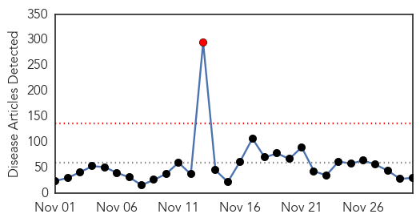
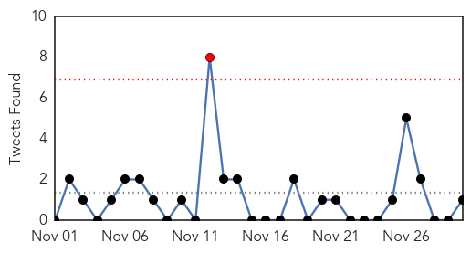

Unknown
30-Day Web Trend
1 alerts, 0 warnings

30-Day Twitter Trend
1 alerts, 0 warnings

Article Locations

Article Confidences

Top Articles:
- 0.986
- Battling plague in Madagascar complicated, says WHO
- 0.917
- Chicago Tribune
- 0.917
- Chicago Tribune
- 0.917
- Chicago Tribune
- 0.917
- Chicago Tribune
- 0.917
- Chicago Tribune
- 0.917
- Chicago Tribune
- 0.917
- Chicago Tribune
- 0.917
- Chicago Tribune
- 0.859
- Diarrhoea turns alarming in Natore, Chapainawabganj
- 0.830
- Hygiene whip on eateries
- 0.809
- Dutch officials detect bird flu at another poultry farm
- 0.808
- Malaria stings jawans in Bastar
- 0.798
- CM Oommen Chandy says flu under control, farmers to be compensated
- 0.738
- FAO warns of animal disease in Mozambique
- 0.714
- Flesh-Eating Maggot Disease Hit Syria : News : Counsel & Heal
- 0.711
- Flu vaccine death toll rises in Italy
- 0.692
- Afghanistan: Urgent action needed to strengthen health sector response to violence against women
- 0.679
- Swiss reject eco-linked immigration cap
- 0.679
- Hollande warns African leaders at Francophone summit
- 0.679
- Far-right leaders vow to 'save Europe' at French gathering
- 0.647
- Should disease stop Ohio's interstate deer trade?
- 0.643
- Nurses essential to delivery of health care
- 0.608
- Egyptian doctors top medical-error list
- 0.604
- MMC clause to curb antibiotic resistance
- 0.580
- Egyptian doctors top medical-error list
- 0.574
- CDC: 172 people on cruise fell ill with norovirus
- 0.560
- Flu vaccine death toll rises in Italy
- 0.554
- Eskenazi to provide rapid HIV testing at all its centers
- 0.505
- Doc crunch cripples U’khand trauma centres
Top Tweets:
- 0.757
- Statistic Sunday: The World Health Oganization (WHO) estimates that between 250000 and 500000 deaths occur every year because of Flu.
MERS
30-Day Web Trend
0 alerts, 0 warnings
30-Day Twitter Trend
0 alerts, 0 warnings
Article Locations
Article Confidences

Top Articles:
Top Tweets:
-
No tweets found for Nov 30, 2014